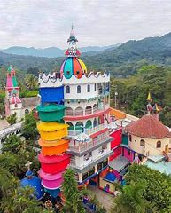
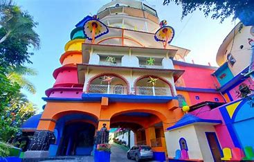
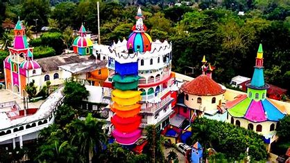

Este asombroso enclave, construido en 1974 por el médico náhuatl Beto Ramón, se erige como un homenaje a la medicina tradicional y al conocimiento ancestral de las plantas medicinales. Beto Ramón, oriundo de la ranchería Aguacatitla, en Axtla de Terrazas.
El Castillo de Beto Ramón es una obra arquitectónica que fusiona elementos de la cultura nahua y pasajes bíblicos. Los edificios que lo componen, como la Iglesia del señor de la Salud, el místico ojo de Dios, y la enigmática Torre de Babel, encierran significados espirituales profundos en la cosmovisión nahua. Este lugar es más que una atracción turística, es un testamento de la fe en la curación a través de la medicina tradicional.
  